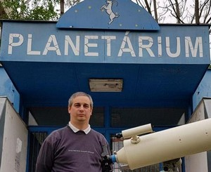
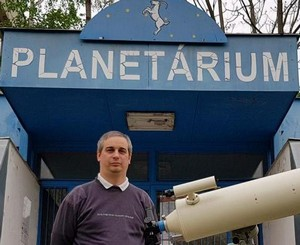
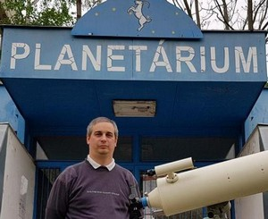

During space travel one has to take a lot of things to Mars and that is very expensive. The Apollo program consumed around 25.4 bn USD. When trying to understand the costs for a space mission we have found that the delivery of 1 kg of material could cost up to is 16,500 USD. Due to redundancy, every devices must be transferred (brought) at least two times, which increases the weight of the shipment and with this also the costs.
Several experts we have met have shown us that there is a need to transport a large amount of tools and equipment to the International Space Station as well and how enormous the budget for Rosetta mission was, 1.4 bn EUR, that constrained the useful cargo load as well. Humanity must solve this issue otherwise space missions will be too expensive and we cannot effectively think about Mars missions.
The problem we have identified is: how to cost and weight effectively produce filaments for 3D printing on Mars to enable equipment production and reduce rocket cargo weight from Earth. We need #3D2MARS.
Our Experts: During this research project we have received a huge amount of help and insights from our experts from a various fields of science.
We interviewed Dr. Vizi Pál from Wigner Physics Research Lab in the Csodák Palota science exhibition, Dr. Both Előd, the principal of the Hungarian Space Agency, Kovács Viktor, the lead and owner of 3d lab 3D műhely,3dmuhely.hu, Dr. Bodnár Zsolt, the philament.eu owner and lead of filament producer company and Szűcs László, the scientific lead of Observatory of Kecskemét.
We have consulted electronic circuits with Dr. Víg Zoltán, the senior lecturer at the University of Óbuda Kandó Kálmán Electrical Engineer Faculty.

Our solution is a filament producer machine that mixes material from Earth and local Mars dust to be able to produce equipment new and spare ones in an effective way on the Mars. 3D printing on Mars can reduce useful cargo need from Earth and provide a solution to this problem. Our solution also includes the thread produced by the filament maker. The solution produces filament thread from a mixture of fine powder of Mars's rock and plastic melt. The heater unit melts the material that is fed by a pulley / drillhead into the 3D printer’s head which expells the filament thread.


For our first prototypes we have started melting different kinds of plastics (like plastic spoon) then later on filament PLA material and pulled a thread with tools. Later on we used camping gas stove an then electric stove to reach a controlled 220 C and stated experimenting with PLA plastic mixed with dust.
One of our experts suggested to explore material physical properties better we also tried sugar fondant mixing with dust allowing us to explore lower temperatures.


Our current solution is based on an Arduino microcomputer board which has the advantage that we can safely and easily learn and use it.
An Arduino Uno board, operated at 5V from USB, a DHT-11 temperature sensor / thermistor that switches on and off the heating unit. Today we are aiming for a simple on-off mode using hysteresis. This means that if we want to reach 30 degrees Celsius we switch heating on at 28 C and switch off only at 32 C, reducing the number of switching still controlling the temperature.
For the material mixing we are building a simple wood drill, metal pipe for housing.
Later on we will need 210 degrees Celsius for melting the filament material (small variability based on color) for which we will use t Grove - High Temperature Sensor.
Explored materials: bauxit stone collected and crushed to dust by us. PLA and other plastic waste.
PLA (PoliLactic Acid) is a plastic that can biodegrade, and can be produced from e.g. corn even on Mars by machines and future colonists.
Our current circuit:


Industrial manufacturing can take place in such a way to test the machine as NASA tests the spacecraft's shipments, for example, its satellites. Earth conditions with a smaller prototype or low ground pitch.
We talked to the experts and asked for their opinions, we gave a presentation in the classroom, we talked about this with our families. We wrote about our research project to the experts and ask for their opinion, and ask what kind of constructive advice they have. We are sharing our results with other First Lego League teams as well and try to learn from them also.
Our Australian friends, Team Cre8te the future suggested to create a business plan to introduce 3D printing and filament production for contries and areas with less advanced infrastructure.
Following the advice of the Team Cre8te the Future from Australia we made a business plan for filament thread
introduction in lower infrastructure areas. Our goal with this plan, that is made to help to the colonization Mars, to turn
it to the Earth’s inhabitants’ benefit.
Please read our business plan with detailed cost estimates and feel free to contact us with any questions.